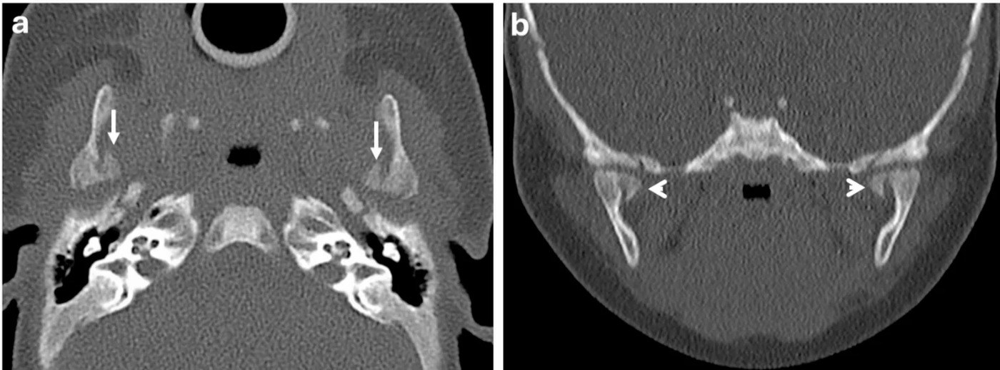
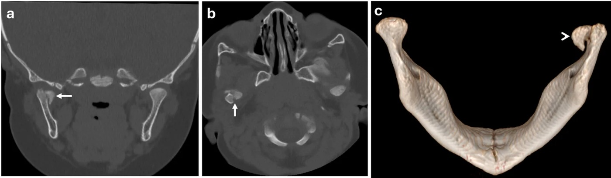
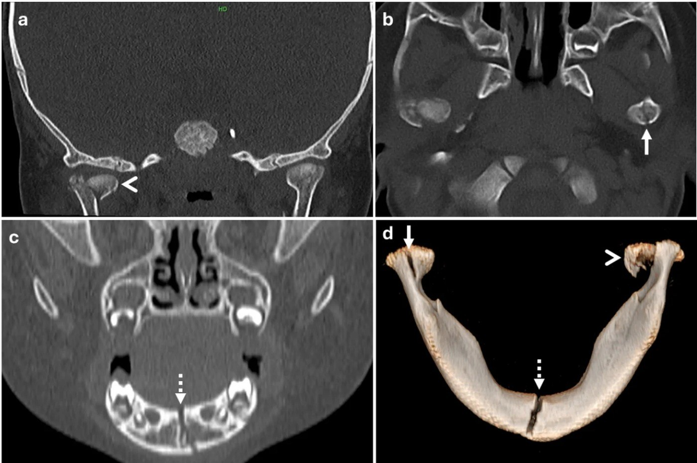
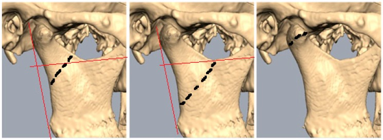
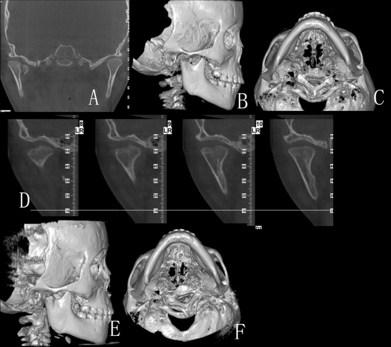

1708 — Gãy lồi cầu xương hàm dưới ở trẻ: phân độ Loukota/Neff, mất chiều cao cành lên, góc di lệch và khi nào ORIF
Tags: pattern:gay-xuong pattern:gay-loi-cau pattern:mat-chieu-cao-canh-len pattern:di-lech-ham vung:loi-cau-ham-duoi vung:ham-duoi vung:khop-thai-duong-ham vung:so-mat anatomy:khop-thai-duong-ham protocol:CT-lat-mong protocol:CBCT protocol:toan-hinh score:Loukota-Neff score:goc-di-lech protocol:ORIF
Mức chắc chắn (certainty): tổng hợp y văn (literature synthesis) — ghép 5 nhũ nhi gãy lồi cầu phát hiện trên CT sọ (Oral Radiol 2026, PMC13619684), tổng quan 116 bài quản lý gãy lồi cầu ở trẻ đang lớn (J Clin Med 2024, PMC11594661), tổng quan tự sự 2021–2026 về phục hồi chức năng – tăng trưởng (Children 2026, PMC13703360), 71 trẻ/77 ổ gãy (Children 2025, PMC11941330), 184 ca + góc di lệch (Front Oral Health 2026, PMC13153062), 22 trẻ nội khớp điều trị kín (Sci Rep 2022, PMC9675802), 9 trẻ lấy mảnh gãy (Med Oral Patol Oral Cir Bucal 2025, PMC12221151) và 495 khớp/13 năm (Craniomaxillofac Trauma Reconstr 2026, PMC13298168). Không có ca do nhóm tự chụp.
Câu hỏi thực hành: bé 4 tuần tuổi ngã từ tay người thân, chụp CT sọ vì "đập đầu" — tình cờ thấy hai đường gãy dọc qua lồi cầu, không di lệch. Hoặc bé 6 tháng ngã bàn ăn, từ chối bú, không chịu ngậm ti giả; CT mặt: gãy đầu lồi cầu vỡ vụn, đẩy vào trong 5 mm. Hoặc bé 5 tuổi ngã cằm, cắn lệch, CT: gãy nội khớp hai bên + gãy giao cằm. Câu hỏi: gãy ở tầng nào, mất bao nhiêu chiều cao cành lên, góc di lệch bao nhiêu — và trẻ này nên "chờ tái tạo", đeo khí cụ chức năng, hay mổ ORIF? Bài chốt ba quyết định: (1) mọi CT sọ ở nhũ nhi/trẻ nhỏ phải đọc lồi cầu hai bên — gãy lồi cầu bị bỏ sót 14,8% và có thể là dấu hiệu duy nhất của chấn thương do người khác gây ra (NAT); (2) "gãy lồi cầu" không phải một bệnh: tầng gãy (đầu/cổ/nền) + góc di lệch quyết định — góc ≥ 60° làm biến chứng tăng từ 5,9% lên 36–42,9%; (3) trẻ còn lớn có khả năng tái tạo rất mạnh nên bảo tồn/khí cụ chức năng là mặc định, ORIF chỉ cho di lệch nặng – không nắn được – cản trở cơ học, và phải tránh bất động kéo dài vì nguy cơ dính khớp.
1. Tổng quan bệnh học – cơ chế hình ảnh: vì sao "ngã cằm" lại gãy lồi cầu
- Cơ chế (TẠI SAO): lực tác động vào cằm/giao cằm truyền dọc theo cung hàm dưới tới lồi cầu — nơi xương mỏng nhất, cổ lồi cầu hẹp, giàu mạch máu — rồi tập trung ở cổ/đầu lồi cầu; vì vậy gãy lồi cầu là gãy do lực gián tiếp, không cần đánh trực tiếp vào khớp. Trẻ có đầu lồi cầu lớn, vỏ xương mỏng, cành lên ngắn → dễ gãy hơn.
- Dịch tễ – định lượng:
- Gãy lồi cầu chiếm 25–40% (có loạt 25–45%) mọi gãy xương hàm dưới; ở trẻ, mỏm lồi cầu chiếm 40–70% gãy xương hàm dưới.
- Một bên ≈ 80%, hai bên ≈ 20%; nam:nữ ≈ 1,8:1 – 2,6:1.
- Gãy xương hàm dưới chiếm 20–50% gãy xương mặt ở trẻ; gãy xương mặt trẻ < 5 tuổi ít gặp (tỉ lệ mặt/hộp sọ nhỏ, nhiều mô mỡ đệm).
- Bỏ sót 14,8% gãy xương hàm ở trẻ ngay lần khám đầu; dấu hiệu lâm sàng duy nhất liên quan bỏ sót là vết thương da vùng hàm.
- TẠI SAO trẻ nhỏ bị ở ĐẦU lồi cầu, trẻ lớn bị ở CỔ/NỀN: trong loạt 77 ổ gãy, gãy đầu lồi cầu ở trẻ trung bình 9,2 tuổi, cổ lồi cầu 7,6 tuổi, dưới lồi cầu 12 tuổi — càng nhỏ càng dễ gãy nội khớp. Nhũ nhi gần như chỉ có gãy nội khớp (5/5 ca trong PMC13619684).
- TẠI SAO hình ảnh lại khó: vỏ xương lồi cầu ở nhũ nhi chỉ ~1 mm, đường gãy không di lệch lại chạy dọc — trùng với bờ lõm/ống mạch; trên toàn hình (OPG) lồi cầu bị chồng hình bởi xương thái dương và cung gò má. Vì vậy CT lát mỏng + đa bình diện là chuẩn; OPG chỉ để sàng lọc.
- TẠI SAO trẻ tái tạo tốt nhưng vẫn phải theo dõi: lồi cầu là trung tâm tăng trưởng sụn – xương; khả năng tái tạo cao nhất < 5 tuổi, giảm 6–12 tuổi, gần người lớn sau 12 tuổi. Trong 22 trẻ gãy nội khớp điều trị kín: mảnh gãy liền ở đúng vị trí di lệch, lồi cầu KHÔNG tự về ổ chảo, và "tiêu ngang" (horizontal resorption) mỏm bên làm mặt khớp hạ xuống ngang mỏm trong; chiều cao cành lên do mảnh gãy quyết định — nếu mảnh tụt nhiều thì ORIF phù hợp hơn.
- TẠI SAO gãy ở trẻ có thể để lại di chứng: mảnh gãy lệch + đĩa khớp lệch + bất động kéo dài → dính khớp (ankylosis), lệch mặt, sai khớp cắn, đau mạn. Ghép sụn sườn ở < 18 tuổi còn cho tái dính 6%, quá phát 14%, thiếu tăng trưởng 22%, lệch mặt 20% — cho thấy "mổ rồi là xong" là sai.
- NAT — không được bỏ qua: trong 9.741 trẻ ≤ 5 tuổi có gãy xương mặt (National Trauma Data Bank), 2,0% là chấn thương do người khác (non-accidental trauma, NAT); nhóm NAT có gãy xương hàm 38,9% vs 21,1%, và gãy lồi cầu 75,8% vs 21,1%. Trong 4 tuần tuổi, một đường gãy lồi cầu "không khớp cơ chế" là chỉ định sàng lọc.
2. Mẫu hình + chẩn đoán phân biệt theo tầng và theo bắt chước (Gamut)
- Ba câu hỏi định khu:
- Tầng nào? đầu lồi cầu (nội khớp) / cổ lồi cầu / nền (dưới lồi cầu) — theo đường vuông góc với bờ sau cành lên qua khuyết sigma: > 50% trên đường = cổ, 50% dưới = dưới lồi cầu, đường chạy qua đầu lồi cầu = đầu lồi cầu.
- Kiểu gì? không di lệch / di lệch / vỡ vụn / ra khỏi khớp (dislocated) — chú ý "dislocated" (Anh) ≠ "disloziert" (Đức = displaced).
- Mất bao nhiêu chiều cao cành lên và góc di lệch bao nhiêu? — hai biến số quyết định mổ hay không.
- Gamut theo tầng gãy:
- Đầu lồi cầu (nội khớp, diacapitular): trẻ nhỏ, ngã thấp; dễ bỏ sót; nguy cơ dính khớp và tiêu lồi cầu cao nhất; cần MRI nếu nghi đĩa khớp lệch.
- Cổ lồi cầu: hay gặp ở trẻ lớn/thanh niên; mảnh gãy thường di lệch ra trước–trong; ORIF qua đường sau hàm/sau tai dễ hơn.
- Nền/dưới lồi cầu: thường kèm gãy giao cằm đối diện; có thể dùng vít xuyên mũi/đường trong miệng.
- Gamut theo hình ảnh "bắt chước gãy":
- Lồi cầu chẻ đôi (bifid condyle) — hai mỏm lồi cầu, bờ vỏ liên tục, không phù tủy.
- Sụn tăng trưởng/mặt khớp chưa cốt hóa ở nhũ nhi — đường sáng ngang, đối xứng hai bên.
- Ống mạch/bè xương dày — đường sáng không cắt vỏ, không phù tủy.
- Tiêu lồi cầu tự phát/JIA — mất chiều cao cành lên từ từ, không đường gãy cấp, có viêm khớp.
- Gãy bệnh lý (nang xương, u) — vỏ mỏng, mảnh "vỏ trứng", cần MRI.
- Mnemonic "LEVEL": Loukota (đầu/cổ/nền), Elevation loss (chiều cao cành lên), Volume/comminution, Extra-articular vs intra, Lateral shift (góc di lệch).
3. Bảng so sánh phân biệt (ma trận đối chiếu)
| Thực thể (entity) | Hình ảnh điển hình | Chốt vào (rule-in) | Chốt loại (rule-out) | Gợi ý xác nhận |
|---|---|---|---|---|
| Gãy đầu lồi cầu nội khớp (không di lệch) | Đường gãy dọc/ngang qua đầu lồi cầu, cắt mặt khớp, không di lệch; có thể chỉ thấy trên coronal | Đường gãy cắt mặt khớp + phù tủy + đau khi há | Bờ vỏ liên tục, đối xứng hai bên → biến thể/bifid | CT lát ≤ 1 mm; MRI nếu nghi đĩa khớp |
| Gãy cổ lồi cầu di lệch | Mảnh lồi cầu ra trước–trong, mất chiều cao cành lên, cắn lệch | Đường gãy trên đường khuyết sigma > 50% + di lệch + mất chiều cao | Gãy nền (dưới đường) → đường mổ khác | CT 3D + đo chiều cao cành lên hai bên |
| Gãy nền/dưới lồi cầu | Đường gãy dưới khuyết sigma, thường kèm gãy giao cằm | Đường gãy 50% dưới đường + gãy cung trước | Gãy cổ đơn thuần (không có gãy cung trước) | CT 3D, đo góc di lệch |
| Gãy–trật (dislocated) | Lồi cầu ra khỏi ổ chảo + đường gãy; không nắn được bằng bảo tồn | Lồi cầu ngoài ổ chảo + đường gãy + cản trở cơ học | Trật khớp đơn thuần (bài 1707) → nắn kín | CT 3D; thử nắn dưới gây mê |
| Vỡ vụn nhiều mảnh (comminuted) | Nhiều mảnh đầu lồi cầu, mất mặt khớp, có thể di lệch vào trong | ≥ 2 mảnh + mất mặt khớp + không còn chỗ bắt vít | Gãy hai mảnh đơn giản → ORIF khả thi | CT 3D; MRI đánh giá đĩa |
| Lồi cầu chẻ đôi (bifid) / biến thể | Hai mỏm lồi cầu, bờ vỏ liên tục, không phù tủy, hai bên đối xứng | Bờ vỏ liền + không phù tủy + đối xứng | Đường gãy thật (cắt vỏ, phù tủy) | So sánh bên đối diện, theo dõi |
| Tiêu lồi cầu (JIA/tự phát) | Mất chiều cao cành lên mạn, mặt khớp phẳng/tiêu, không đường gãy cấp | Tiến triển nhiều tháng + viêm khớp + không chấn thương | Gãy cấp (đường gãy rõ, phù tủy) | MRI, theo dõi 6–12 tháng |
4. Protocol chụp + phân độ & thuật toán điều trị
- Bước 1 — CT là chuẩn, chụp đúng cách:
- CT xương hàm mặt, lát ≤ 1 mm, cửa sổ xương, dựng coronal + sagittal + 3D VR; ở trẻ giảm liều theo cân nặng (5 ca nhũ nhi dùng CTDIvol 14–25,12 mGy, DLP 228,8–332 mGy·cm).
- OPG chỉ sàng lọc khi hợp tác tốt và đủ 2D — chồng hình, không đánh giá nội khớp/di lệch chính xác.
- CBCT trường nhỏ: độ phân giải xương cao, ít mô mềm; dùng khi câu hỏi chỉ về xương và sẽ đổi điều trị.
- MRI: không thay thế CT cho gãy xương cấp; bổ sung khi cần đĩa khớp, sụn, tràn dịch, bao khớp, hoặc triệu chứng kéo dài.
- Nguyên tắc ALARA: không chụp lặp thường quy; một lần CT đủ cho quyết định, chụp lại chỉ khi thay đổi điều trị.
- Bước 2 — đo ba số bắt buộc:
- Chiều cao cành lên (ramus/ramal height) hai bên → chênh mm.
- Góc di lệch (dislocation angle) = góc giữa trục dài mảnh lồi cầu và trục dài cành lên, đo trên CT 3D đa bình diện ở mặt phẳng di lệch tối đa; giá trị trung bình trong loạt 184 ca: 85,4 ± 29,5° (phải), 82,2 ± 27,5° (trái).
- Mức độ vỡ vụn và vị trí đĩa khớp (nếu có MRI).
- Bước 3 — ngưỡng tiên lượng (dùng để tư vấn, không phải chỉ định tuyệt đối):
| Góc di lệch | Tỷ lệ biến chứng sau điều trị (n = 91 ca mổ) |
|---|---|
| < 60° | 5,9% (1/17) |
| 60–89° | 36,0% (9/25) |
| ≥ 90° | 42,9% (21/49) |
- OR 1,27 mỗi 10° (1,04–1,57), p = 0,021; biến chứng chung 29,0% (49/169), nặng 7,7%, nhẹ 17,8%; tháo dụng cụ 43,1% ở nhóm mổ.
- Bước 4 — thuật toán điều trị (không có "một chuẩn" cho mọi ca):
flowchart TD
A[Gãy lồi cầu ở trẻ] --> B{Di lệch?}
B -->|Không/ít| C[Bảo tồn: giảm đau, mềm, vận động sớm]
B -->|Có| D{Cắn khớp còn nắn được?}
D -->|Có| E[Khí cụ chức năng / chun dẫn hướng + tập]
D -->|Không| F{Mất chiều cao cành lên lớn, cản trở cơ học, hoặc gãy-trật?}
F -->|Không| G[Thử bảo tồn có kiểm soát 1-2 tuần]
F -->|Có| H[ORIF - nếu có kinh nghiệm và trẻ hợp tác]
C --> I[Theo dõi 6-18 tháng + hàng năm tới khi hết tăng trưởng]
E --> I
G --> I
H --> I
I --> J{Lệch mặt / sai khớp cắn / MIO giảm?}
J -->|Có| K[CT lại + hội chẩn chỉnh hình hàm]
J -->|Không| L[Tiếp tục theo dõi]
- Bốn lựa chọn: bảo tồn (expectative) — giảm đau, ăn mềm, vận động sớm; khí cụ chức năng/chun dẫn hướng — khi cắn khớp còn nắn được; bất động liên hàm (MMF) ngắn — chỉ khi không giữ được khớp cắn bằng cách khác; ORIF — khi di lệch nặng/không nắn được/cản trở cơ học/gãy–trật.
- Thực hành đa trung tâm (14 đơn vị): bảo tồn 28%, MMF 26%, ORIF 46% — cho thấy dao động rất lớn, không có đồng thuận.
- Tránh MMF ở trẻ: nhiều bất lợi (hại răng/nha chu, đường thở, vệ sinh, suy dinh dưỡng, cứng hàm) và tăng nguy cơ dính khớp; ưu tiên vận động sớm + chun dẫn hướng.
- Kết quả khi làm đúng (495 khớp/13 năm): MIO 18,77 mm → 40 mm lúc 6 tháng, vận động sang bên ~9,6 mm đối xứng, khớp cắn phục hồi; biến chứng chủ yếu yếu dây VII thoáng qua.
- Theo dõi: khám + chụp lại ở 6 và 18 tháng, sau đó hằng năm tới khi hết tăng trưởng, tìm lệch mặt, sai khớp cắn, hạn chế há, dính khớp; trẻ < 4 tuổi** hoặc **> 12 tuổi ít cần chỉnh hình xương hơn nhóm 4–11 tuổi (chỉnh hình 22% ở 4–7 tuổi, 17% ở 8–11 tuổi).
5. Biến thể bình thường và cạm bẫy
- Bẫy 1 — bỏ sót trên CT sọ "vì chỉ định chấn thương đầu": 5 nhũ nhi trong PMC13619684 được phát hiện gãy lồi cầu tình cờ trên CT sọ; không có dấu hiệu lâm sàng. Đọc lồi cầu hai bên trên MỌI CT sọ ở trẻ < 2 tuổi là quy tắc, không phải "khi nghi".
- Bẫy 2 — nhũ nhi không "kêu đau": biểu hiện chỉ là từ chối bú, không ngậm ti giả, quấy khóc; gãy không di lệch vẫn có thể cắt mặt khớp (gãy nội khớp) — tìm trên coronal, không chỉ axial.
- Bẫy 3 — gọi "bifid condyle"/biến thể là gãy, và ngược lại: bờ vỏ liên tục, không phù tủy, đối xứng → biến thể. Đường gãy thật cắt vỏ và có phù tủy (nếu chụp đủ sớm).
- Bẫy 4 — dịch thuật phân loại: "dislocated" (Anh) = ra khỏi khớp; "disloziert" (Đức) = di lệch. Đọc Loukota/Neff mà không phân biệt sẽ đánh giá sai độ nặng và chọn sai đường mổ.
- Bẫy 5 — kết luận lệch mặt quá sớm: trẻ có thể tái tạo gần hoàn toàn (restitutio ad integrum) nếu < 6 tuổi, và bù trừ bằng dày ổ chảo + tăng chiều cao cành lên; đánh giá lệch mặt trước 6–12 tháng dễ overcall. Ngược lại, mảnh gãy tụt nhiều thì tái tạo không kéo mảnh về ổ chảo — cần CT lại đúng lúc.
- Bẫy 6 — bất động kéo dài: MMF > 2–3 tuần ở trẻ làm cứng hàm, tiêu sụn, dính khớp; "để yên cho liền" không đồng nghĩa "bó hàm".
- Bẫy 7 — NAT: cơ chế không khớp với hình ảnh, nhiều gãy ở các vị trí khác nhau, trẻ < 12 tháng → sàng lọc xương toàn thân, khám mắt, hội chẩn bảo vệ trẻ; tỉ lệ gãy lồi cầu trong NAT 75,8% so với 21,1% ở chấn thương do tai nạn.
6. Tự lượng giá — Blind Quiz
Ca 1 — Bé 4 tuần tuổi, ngã từ tay anh họ 4 tuổi, chụp CT sọ vì "đập đầu". Nhìn hình, mô tả trước.

- Gợi ý: khám lâm sàng bình thường, đang bú tốt, không nôn.
- Câu hỏi: Đường gãy ở đâu, có di lệch không, có cắt mặt khớp không? Xử trí? Có cần làm gì thêm vì tuổi của bé?
Bấm để hiện đáp án
- Dấu hiệu (findings): a (axial) — hai đường gãy dọc qua hai lồi cầu (mũi tên), ít di lệch, mảnh trong hơi tụt xuống; b (coronal) — đường gãy cắt vào mặt khớp hai bên (đầu mũi tên).
- Chẩn đoán (diagnosis): gãy nội khớp hai bên, không di lệch ở nhũ nhi. Điều trị: bảo tồn (giảm đau, theo dõi 2 tuần), vì trẻ còn tái tạo mạnh và không có cản trở cơ học.
- Vì tuổi 4 tuần + cơ chế: đánh giá NAT (bệnh sử, khám toàn thân, sàng lọc xương nếu nghi) — trong bài gốc, 2 tháng sau bé quay lại với vết bầm đùi không khớp lời khai và được sàng lọc.
- Nguồn ảnh: Oral Radiol 2026 (PMC13619684), CC BY 4.0 — ảnh nguyên bản.
Ca 2 — Bé 6 tháng, ngã bàn ăn, bỏ bú; CT mặt thấy gãy đầu lồi cầu.

- Câu hỏi: Mô tả 3 thành phần (vỡ vụn, di lệch, mặt khớp)? Vì sao nhóm tác giả vẫn chọn bảo tồn dù di lệch 5 mm? Điều gì phải theo dõi?
Bấm để hiện đáp án
- Dấu hiệu (findings): a coronal + b axial — gãy vỡ vụn đầu lồi cầu phải, đẩy vào trong ~5 mm, cắt mặt khớp; c — 3D nhìn sau thấy mảnh trong di lệch (đầu mũi tên).
- Chẩn đoán (diagnosis): gãy nội khớp vỡ vụn, di lệch trong ở nhũ nhi 6 tháng. Bảo tồn vì: trẻ còn rất nhiều tiềm năng tái tạo, không có cản trở cơ học rõ (bé vẫn bú được sau giảm đau), và mổ ở tuổi này nguy cơ tổn thương trung tâm tăng trưởng + dây VII.
- Theo dõi: MIO, khớp cắn, tăng trưởng hàm, hẹn 2 tuần – 6 tháng – hằng năm; dặn cha mẹ đau khớp/ hạn chế há về sau.
- Nguồn ảnh: Oral Radiol 2026 (PMC13619684), CC BY 4.0.
Ca 3 — Bé 11 tháng, bầm mặt + bụng, CT sọ phát hiện bất thường hai lồi cầu.

- Câu hỏi: Ba ổ gãy là gì? Vì sao "xơ hóa" ở bên trái lại quan trọng? Bước tiếp theo bắt buộc?
Bấm để hiện đáp án
- Dấu hiệu (findings): a — lồi cầu trái không di lệch nhưng bờ xơ hóa (mũi tên); b — lồi cầu phải vỡ vụn, di lệch (đầu mũi tên); c — đường gãy giao cằm chạy lên mỏm răng cửa; d — 3D thấy cả ba ổ.
- Chẩn đoán (diagnosis): gãy lồi cầu hai bên + gãy giao cằm, trong đó bên trái đang liền/xơ hóa → chấn thương nhiều đợt. Đây là NAT cho tới khi chứng minh ngược.
- Bước tiếp theo: sàng lọc xương toàn thân (bài gốc tìm thêm gãy xương đùi + gãy sườn), khám mắt, hội chẩn bảo vệ trẻ; xương hàm điều trị bảo tồn.
- Nguồn ảnh: Oral Radiol 2026 (PMC13619684), CC BY 4.0.
Ca 4 — Ba hình 3D cùng một khớp: hãy gọi tầng gãy và chọn đường tiếp cận.

- Câu hỏi: Đường đỏ nằm ở đâu? Tầng nào ứng với "trên 50%", "dưới 50%", "qua đầu lồi cầu"? Cách mổ khác nhau thế nào?
Bấm để hiện đáp án
- Dấu hiệu (findings): đường đỏ vuông góc với bờ sau cành lên qua khuyết sigma; giữa (ảnh 2) — đường gãy trên 50% so với đường → cổ lồi cầu; phải (ảnh 3) — qua đầu lồi cầu → nội khớp; trái (ảnh 1) — 50% dưới → dưới lồi cầu.
- Ý nghĩa: tầng gãy quyết định đường mổ — nội khớp: đường trước tai/trong ống tai; cổ: sau hàm – sau tuyến mang tai; nền: dưới hàm cao/trong miệng.
- Số liệu bối cảnh: 77 ổ gãy ở 71 trẻ — 35 đầu lồi cầu, 7 cổ, 35 dưới lồi cầu; không có khác biệt biến chứng có/không mổ trong loạt này (nhóm mổ nhỏ).
- Nguồn ảnh: Children 2025 (PMC11941330), CC BY 4.0.
Ca 5 — Bé 5 tuổi, gãy nội khớp phải điều trị kín; ảnh dưới là CT lúc gãy và sau 7 tháng.

- Câu hỏi: Mảnh gãy có về ổ chảo không? Điều gì xảy ra với mỏm bên của lồi cầu? Vì sao điều này quyết định chiều cao cành lên?
Bấm để hiện đáp án
- Dấu hiệu (findings): A–C — gãy nội khớp phải, mảnh di lệch trong/xuống; D — các lát cắt dọc lồi cầu theo thời gian: mỏm bên tiêu dần theo chiều ngang ("horizontal resorption") tới khi ngang mặt khớp mỏm trong; E–F — 3D sau: lồi cầu dẹt, thấp hơn bên đối diện.
- Ý nghĩa: điều trị kín không đưa mảnh về ổ chảo; mảnh liền tại chỗ di lệch và quyết định chiều cao cành lên. Vì vậy khi mảnh tụt nhiều, tác giả bài gốc khuyến nghị ORIF + cố định vững thay vì tiếp tục chờ.
- Nguồn ảnh: Sci Rep 2022 (PMC9675802), CC BY 4.0.
Bài liên quan chéo
- 1703 – Dính khớp thái dương–hàm bẩm sinh ở trẻ
- 1707 – Trật khớp thái dương–hàm ở trẻ
- 600 – Tổng quan Hệ Nhi khoa
- 300 – Tổng quan Hệ Cơ – Xương – Khớp
Ảnh
- 5 ảnh, tất cả CC BY 4.0: Oral Radiol 2026 (PMC13619684) 3 ảnh; Children 2025 (PMC11941330) 1; Sci Rep 2022 (PMC9675802) 1 — nguyên bản, không crop/ghép.
- Không tạo composite: mỗi ảnh đến từ một bệnh cảnh khác nhau (nhũ nhi không di lệch, vỡ vụn, NAT, sơ đồ phân tầng, tái tạo) — ghép sẽ gợi ý sai "cùng một ca".
- Ảnh WebP của PMC13619684 được chuyển sang JPEG, không đổi khung/nhãn.
Không dùng để chẩn đoán độc lập khi chưa có người hướng dẫn.